首页
上一页
205
206
207
208
209
210
210
211
212
213
214
215
下一页
末页
defanive2
无尽黑夜
14
等待的同时我也把这些底边给换成雪块
——来自 MCLive
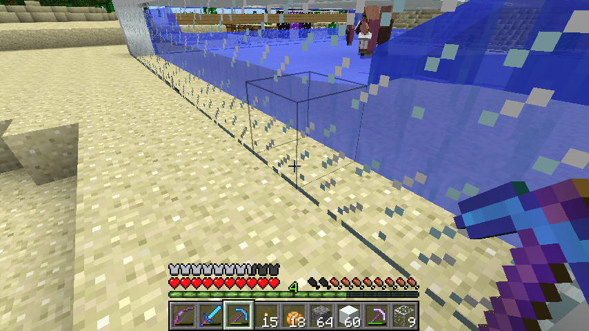
14604楼
2013-03-30 14:49
defanive2
无尽黑夜
14
各种欢乐
——来自 MCLive
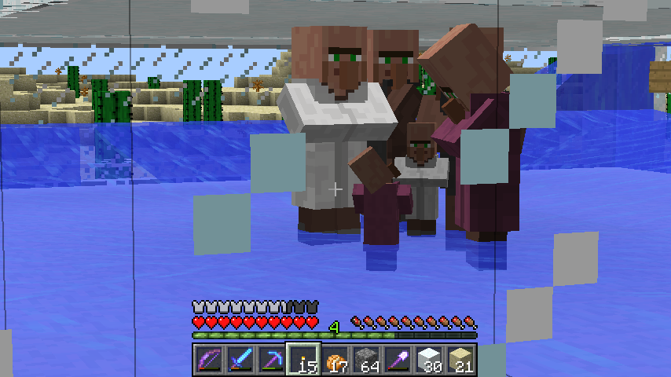
14605楼
2013-03-30 14:52
defanive2
无尽黑夜
14
接下来干正事，把甘蔗给收了
收完这轮之后就准备挂机繁殖村民了
然后来讲解一些神奇的东西
——来自 MCLive
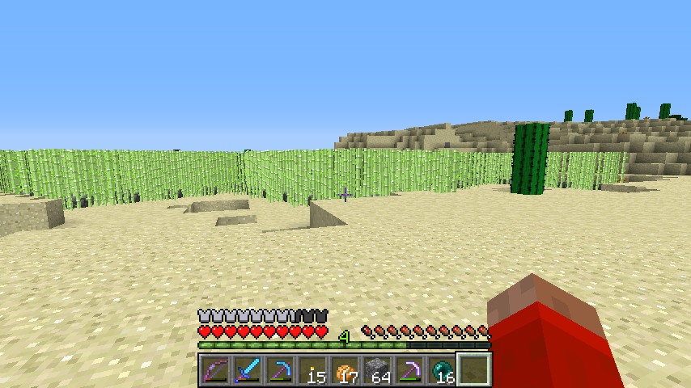
14606楼
2013-03-30 14:53
defanive2
无尽黑夜
14
收割到一半，回来的时候看到之前的2个小村民已经长成了
并且进行了第二轮繁殖
又出了2个小村民
这种繁殖很快就会指数型发展
到最后繁殖速度会非常快
——来自 MCLive
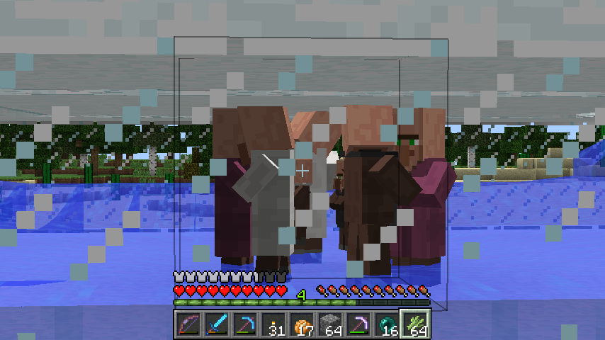
14608楼
2013-03-30 15:09
defanive2
无尽黑夜
14
收割完了，现在已经有2箱+13组的甘蔗了
对于交易来说应该可以支持很久了
——来自 MCLive
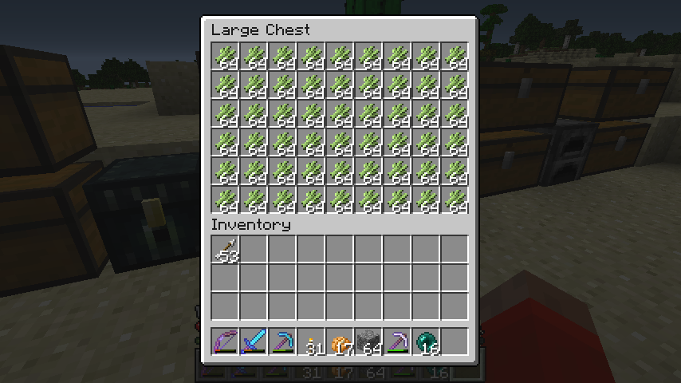
14610楼
2013-03-30 15:15
defanive2
无尽黑夜
14
接下来我们就挂机等待繁殖把
说到交易，我们知道
一个交易只能交易7次，然后就会被关闭了
但是在特定情况下交易又会重新开启
如果要有稳定的绿宝石源
必须要想办法保证交易不被关闭
或者被关闭后又能重新开启
——来自 MCLive
14613楼
2013-03-30 15:20
defanive2
无尽黑夜
14
网上找了不久，都没找到非常详细的解释
因此最后决定，自己动手，丰衣足食
来看MC的源代码！
——来自 MCLive
14614楼
2013-03-30 15:25
defanive2
无尽黑夜
14
使用的是MCP 7.44，反编译MC 1.5.1原版
虽然没学过java，但是代码风格和cpp很相似
看懂基本上没有什么问题
来到EntityVillage.java
来到useRecipe方法，也就是进行一次交易会触发的方法
首先交易后这个交易的交易次数递增
然后注意到if里面的判断条件是重点：
par1MerchantRecipe.hasSameIDsAs((MerchantRecipe)this.buyingList.get(this.buyingList.size() - 1))
代码的意思很简单
判断交易的是否是最后一个交易项目
在接下来true的部分，村民的needsInitilization被设为true了
也就是说，如果交易的是最后一个项目
那么needsInitilization就被设为true
接下来我们追踪needsInitilization
——来自 MCLive
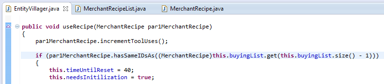
14616楼
2013-03-30 15:34
defanive2
无尽黑夜
14
在村民的updateAITick方法里面有对needsInitialization进行处理
updateAITick其实就是每一个game tick村民会执行的东西
也就是所谓的entity更新
首先一开始是一个很简单的递减倒计时
刚才的代码里，交易时把timeUnitlReset设为了40
接下来这里，如果不在交易界面那么就递减直到0
其实就是延时了2秒才触发
然后就到判断needsInitilization
如果true的话，那么就判断交易项目是否多于1个
如果多于1个，那么就循环所有的交易项目，每个随机加2到12次可交易次数
接下来就执行了addDefaultEquipmentAndRecipies
然后重设needsInitilization为false
最后设置一些参数之后
给村民加上了regeneration的粒子效果
也就是我们看到的，交易之后的紫色粒子效果
——来自 MCLive
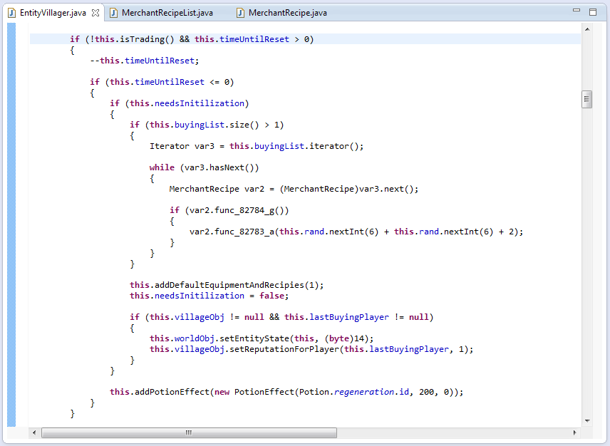
14618楼
2013-03-30 15:42
defanive2
无尽黑夜
14
接下来继续追踪到addDefaultEquipmentAndRecipies
里面一大堆代码，其实都是生成交易项目而已
按照村民的职业和各种交易项目的概率，生成参数指定个数的交易
然后到了最后一步
把这些生成的交易addToListWithCheck到现有的交易列表里面
最后跟踪一下，addToListWithCheck其实就是把交易加到列表里
只不过当交易已存在时，更新价钱而已
——来自 MCLive
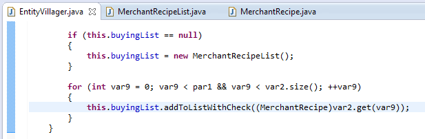
14619楼
2013-03-30 15:46
defanive2
无尽黑夜
14
好吧，来总结一下，核心代码的思路：
如果交易了最后一项交易，那么就会请求执行Initialization
交易界面关闭2秒后，执行Initialization
Initialization中：
如果有多于1项交易项目，给每项交易项目随机加2-12次可交易次数
接下来随机添加一个交易项目
如果这个交易项目已存在，那么更新价钱；如果不存在，添加
——来自 MCLive
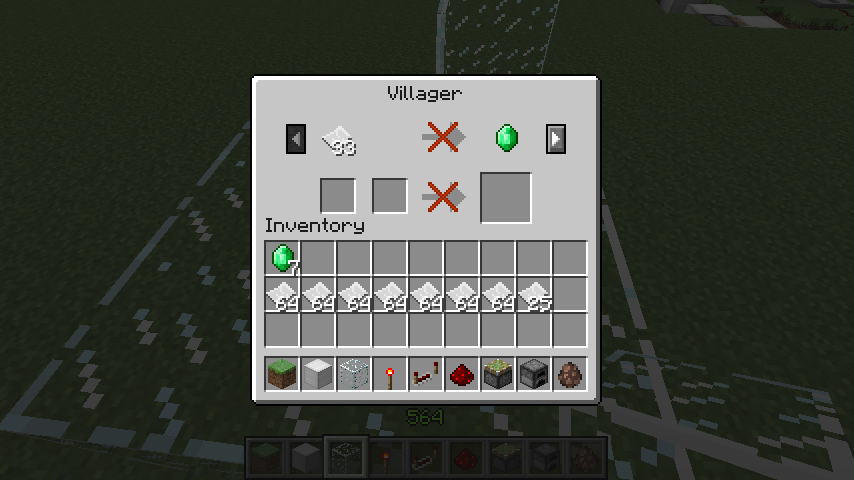
14620楼
2013-03-30 15:50
defanive2
无尽黑夜
14
接下来我们就可以利用这些代码的思路
来尝试一下abuse交易系统
之前我们看到，图书管理员的纸交易
由于交易了7次，已经被关闭了
而产生了第二个交易项目，绿宝石换钟
这个时候，我们换一个钟
——来自 MCLive
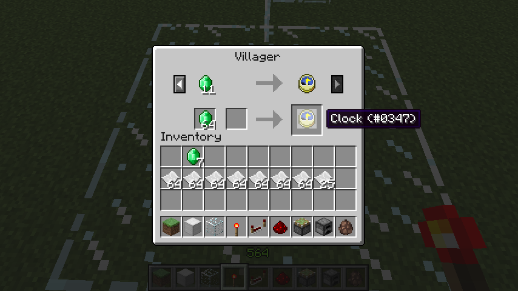
14621楼
2013-03-30 15:52
defanive2
无尽黑夜
14
由于我们交易了最后一个交易项目
因此Initialization被执行了
并且村民也有了regeneration的紫色粒子
——来自 MCLive
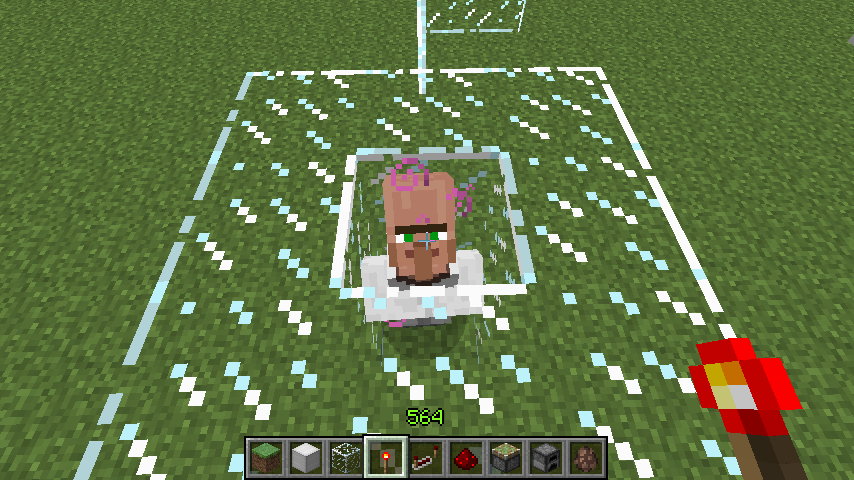
14624楼
2013-03-30 15:53
defanive2
无尽黑夜
14
而这个时候再打开村民的交易GUI
我们看到纸又可以交易了
原因很简单，在Initialization里面
判断是否多于1个交易项目，这时是true
于是就把每个交易项目的可交易次数加了2-12次
于是我们又可以重新换纸了
——来自 MCLive
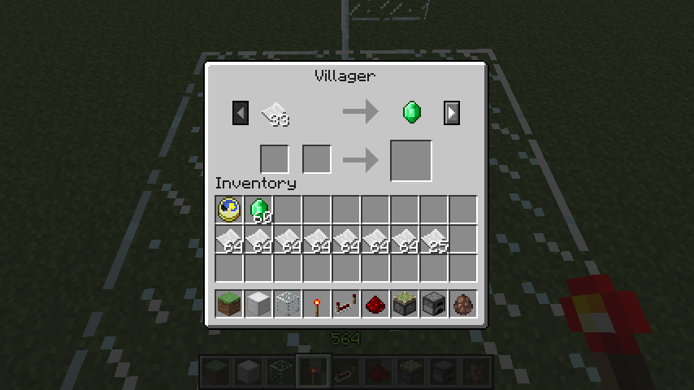
14625楼
2013-03-30 15:55
defanive2
无尽黑夜
14
而当我们纸再换完之后，我们又可以去到最后一个交易
再交易一次，然后等待2秒之后的Initialization
这样我们就可以继续用纸换绿宝石了
——来自 MCLive
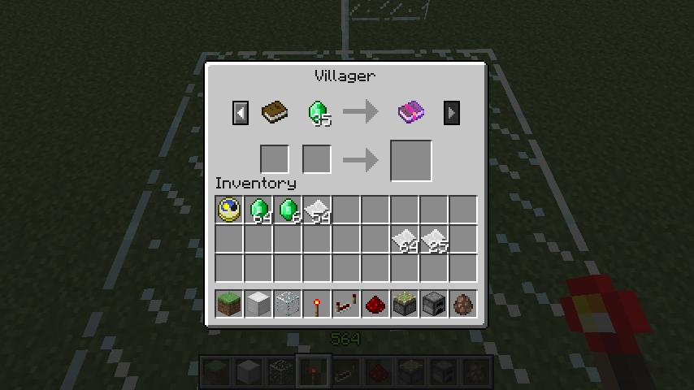
14626楼
2013-03-30 15:57
defanive2
无尽黑夜
14
这个时候我们来考虑一个情况
图书管理员有8个交易
如果说纸的交易正好是第8个，也就是最后一个交易，会怎么样？
那么我们可以无限交易纸了
考虑一下，交易纸之后，交易被关闭了
同时Initialization被触发，每个交易都可以再交易了
此时，addDefaultEquipmentAndRecipies会从8个交易中选择一个
而最后的addToListWithCheck的结果则是，由于这8个交易都有了
因此只会更新交易的价钱，而不会新增一个交易
也就是说，最后一个交易仍然是纸
因此我们就可以重新交易纸直到交易被关闭
然后交易重新Initialization，又重新开启纸的交易
但是无法新增任何交易项目
纸的交易仍然是最后一项
于是如果我们可以找到一个图书管理员
他的最后一个交易是纸交易
我们就可以无限交易纸了
——来自 MCLive
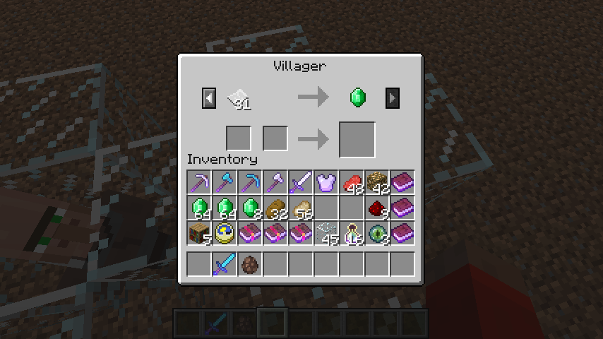
14628楼
2013-03-30 16:04
defanive2
无尽黑夜
14
这个是1.4旧版的交易图，但是1.5里面也类似
同样的道理可以运用到任何一种职业上
只要是这个村民的全部交易都被刷出了
那么最后一个交易是可以无限交易的
——来自 MCLive
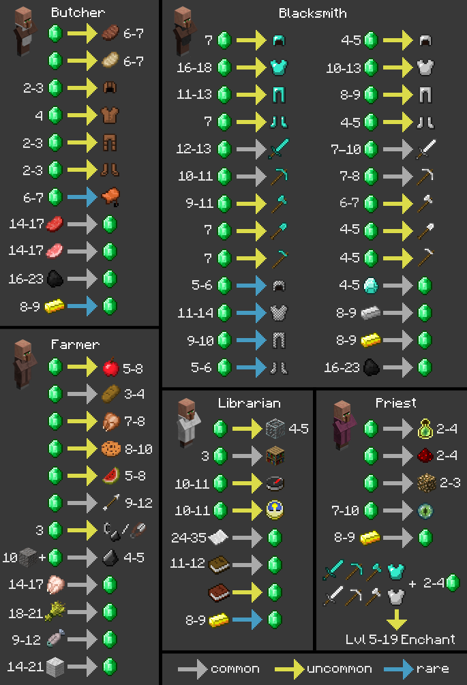
14629楼
2013-03-30 16:08
defanive2
无尽黑夜
14
但是注意，要刷出所有的交易并不是简单的事
例如图书管理员的金锭换绿宝石交易，概率只有0.2%
但是，1.5中图书管理员总共有9个交易（包括金锭）
如果说，前8个交易都刷出来了，并且第8个交易是纸
这样只剩下金锭的交易没有刷出来
那么其实也等同于无限纸交易的
原理一样，在addDefaultEquipmentAndRecipies中
有99.8%的几率不会抽中金锭，而会抽中已有的交易
因此就会保持纸交易仍然是最后一位
我们的目的只需要刷出8个交易，并且最后一个交易是纸即可
——来自 MCLive
14630楼
2013-03-30 16:14
defanive2
无尽黑夜
14
但是这样刷交易的代价是非常昂贵的
纸交易的概率有24.8%，非常高
因此很容易在最后一个交易之前出现
而我们看到，交易附魔书是非常昂贵的
但是，附魔书的交易和金的交易一样概率非常低
因此我们只需要在纸交易出现前，把 书、已写的书、书架、玻璃、指南针、钟 的交易刷出就可以了
刷一次交易不出纸的概率有75%，那么6次的概率就是18%
也就是说，如果运气好的话，6个图书管理员村民就可以找到了
当然这个是最乐观的情况，实际交易次数要远大于6次（接近20次）
但是这个工程是很有价值的，一旦找到一个之后
绿宝石来源就无忧了
——来自 MCLive
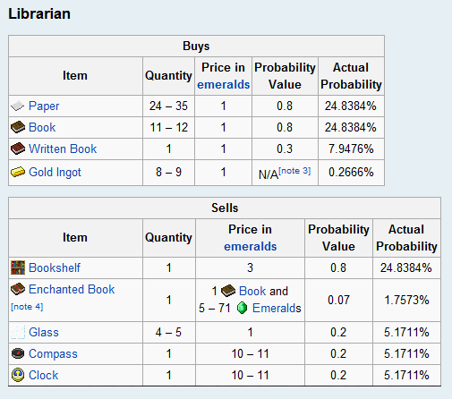
14632楼
2013-03-30 16:21
defanive2
无尽黑夜
14
至于其他职业的话，个人感觉刷无限交易的意义都不大
值得注意的是，很简单的数学原理
一种职业有越多的交易项目，那么就越不可能刷出自己想要的交易
因此铁匠的交易基本可以死心了
剩下的农民有14个交易，教士有13个交易
他们交易的概率分布都很零散，要刷起来也很困难
但是农民可以刷来得无限食物
而教士可以刷来的无限萤石
无限萤石的意义还是比较重的
PS 图中是现在村民的情况
目测还要等繁殖几个小时才能到可收集的界限
——来自 MCLive
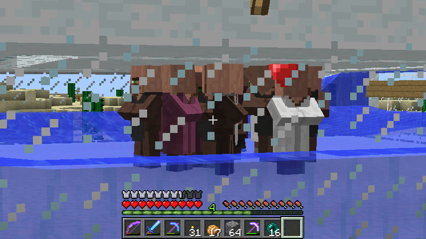
14633楼
2013-03-30 16:26
defanive2
无尽黑夜
14
说到之前的牛场，其实也是为了这个村民计划做准备
如果说运气比较差的话，倒数第二个交易是书换绿宝石
那么可以要交易5-10次才可以刷到纸交易
5-10次的书交易大约会消耗50-120个皮革
因此要有足够的皮革储备
这会是一个非常大的工程，耗资也很大
但是让绿宝石可以无限刷，从而无限换钻石装备
还是很值得的
——来自 MCLive
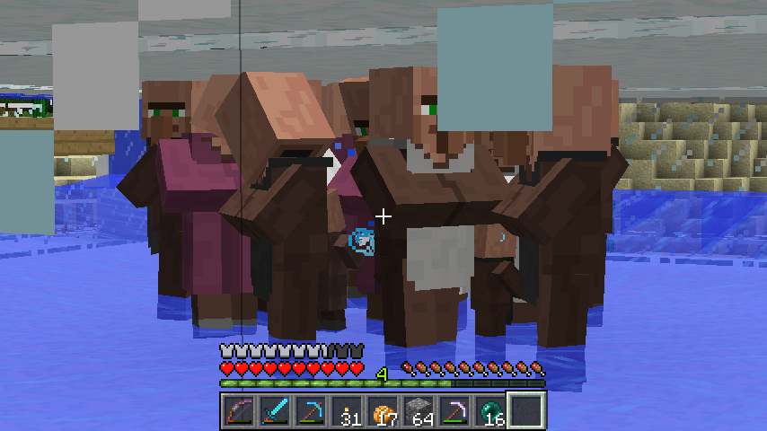
14635楼
2013-03-30 16:29
defanive2
无尽黑夜
14
好吧，今天就直播到这里了
明天会挂机等繁殖，然后开始交易计划
PS 大工程啊
——来自 MCLive
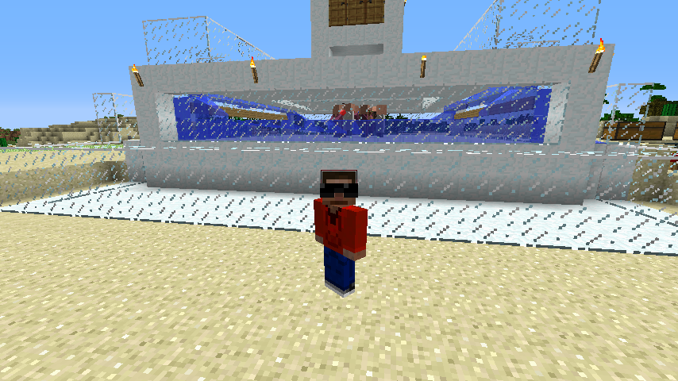
14637楼
2013-03-30 16:31
defanive2
无尽黑夜
14
亲眼目睹一个小村民从大村民菊花里面喷出来
我的眼睛。。。。。。
——来自 MCLive
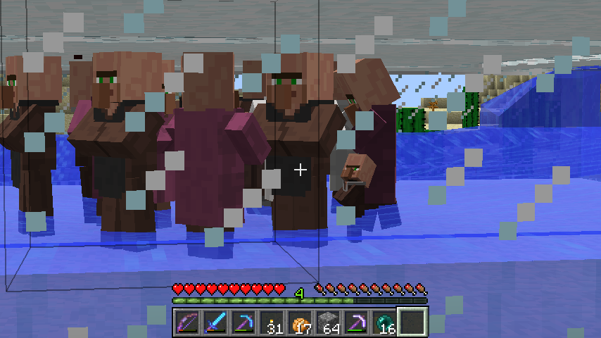
14641楼
2013-03-30 16:44
defanive2
无尽黑夜
14
不管怎么说，村民数量已经稳定增长到19个了
继续挂机+回复大家
PS 13x13=169
也就是说要有近170个村民才会开始被捕捉
这个时候的繁殖速度很可观了
基本上一两分钟就会出一个村民
因此基本上只需要刷出一个纸交易
其他交易，就算被关闭了，再找一个同职业的村民就好了
——来自 MCLive
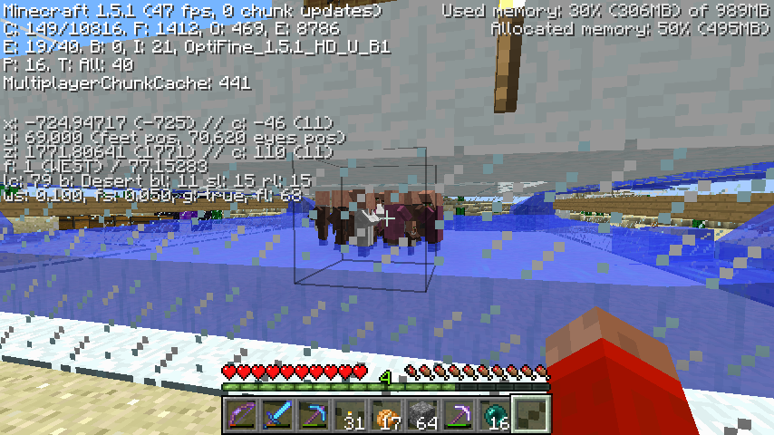
14642楼
2013-03-30 16:47
defanive2
无尽黑夜
14
仍然在挂机等村民繁殖中
顺便回复一下大家
这段时间发现度娘抽得很严重
之前200+个回复在个人中心只显示了不到70个
今天100+个回复只显示了50个左右
正在从昨天直播开始的楼层看，一个一个回复
如果有很重要的回复的话可以AT我一下，我的AT仍然能收到的
PS 之前貌似另外一个回复也进到了只看楼主里面
看起来度娘抽风严重，得治啊 = =
14671楼
2013-03-31 06:06
defanive2
无尽黑夜
14
已经有180+个村民了
离收集区域很接近了
——来自 MCLive
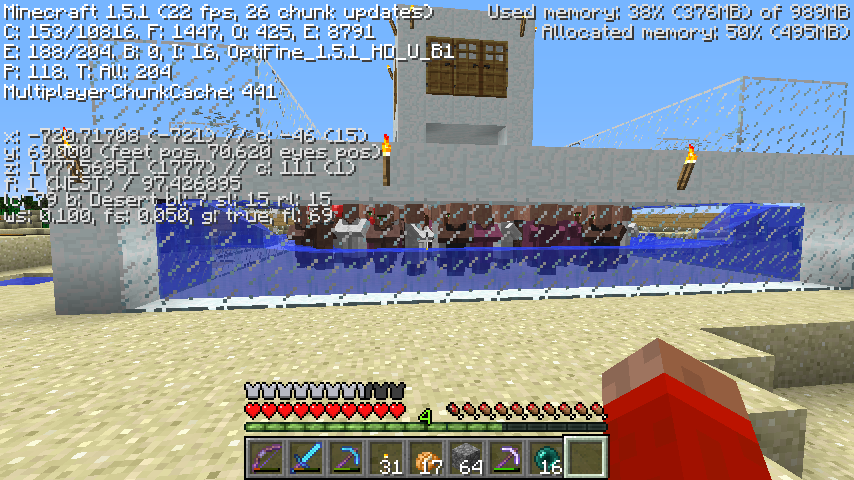
14674楼
2013-03-31 07:34
defanive2
无尽黑夜
14
第一只村民被运出来了！
——来自 MCLive
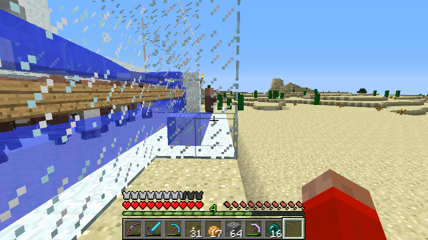
14675楼
2013-03-31 07:36
defanive2
无尽黑夜
14
结果是一个农民
接下来我要思考一下处置方式了
——来自 MCLive
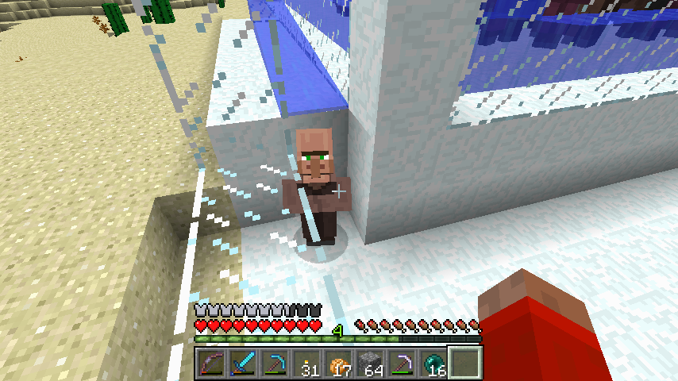
14676楼
2013-03-31 07:36
defanive2
无尽黑夜
14
又有一只村民被运了出来
——来自 MCLive
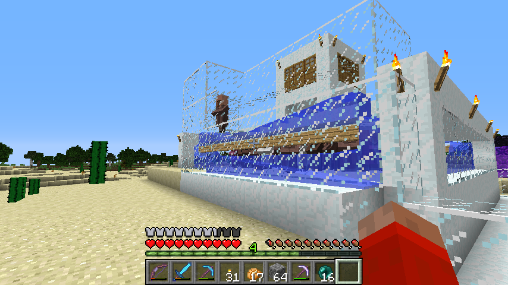
14677楼
2013-03-31 07:37
defanive2
无尽黑夜
14
各种繁殖进行ing
——来自 MCLive
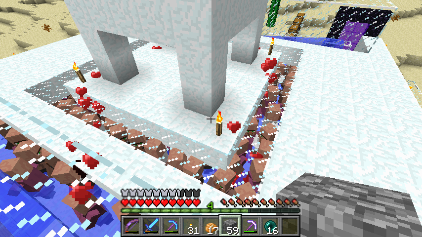
14678楼
2013-03-31 07:37
首页
上一页
205
206
207
208
209
210
210
211
212
213
214
215
下一页
末页